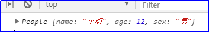

原文连接:https://www.cnblogs.com/rope/p/10705049.html
一、对象（Object）
1.1 认识对象
对象在JS中狭义对象、广义对象两种。
广义：相当于宏观概念，是狭义内容的升华，高度的提升，范围的拓展。
狭义：相当于微观概念，什么是“狭”？因为内容狭隘具体，范围窄所以称为“狭”
l 狭义对象
就是用{}这种字面量的形式定义的对象，它是一组属性的无序集合
var obj = {
name : "小明",
age : 12,
sex : "男",
hobby : ["足球","刺绣","打麻将"]
}上面这个对象，表示一个“人”里面有4个属性，换句话说，这个对象里面除了4个属性，别的什么都没有。
比如不用对象，而用数组来存储一组刚才的值：
var arr = ["小明",12,"男",["足球","刺绣","打麻将"]]
console.log(arr)数组只能存储“值”，不能存储“键”。
换句话说，数组中的值“语义”不详。对象除了能存储值，还能存储值的“语义”，术语叫“键(key)”
其实，对象就是一组值和值的语义的封装。
【广义对象】
DOM元素是对象，但是和刚刚说的“狭义对象里面只有一组值，别的什么都没有”不同
var oBox = document.getElementById("box"); //得到一个DOM对象
oBox.xingming = "小明";
oBox.age = 12;
oBox.sex = "男";
oBox.hobby = ["足球","刺绣","打麻将"];
console.log(oBox.hobby);
console.log(typeof oBox); //object通过DOM方法得到一个DOM对象，此时可以通过“.”点语法，给这个对象添加属性，用oBox访问age。
此时这个对象不仅仅只有4个属性，还有别的，因为oBox毕竟有一个HTML标签实体在页面上。
数组也是对象：
var arr = [1,2,3,4,5];
//也可以通过“点”语法，给数组添加属性
arr.xingming = "小明";
arr.age = 12;
arr.sex = "男";
console.log(typeof arr); //object
console.log(arr.xingming); //小明说明数组有对象的一切特征，能添加属性，但是你不能说这个数组只有name、age、sex三个属性，别的什么都没有，毕竟它有一组数。
函数也是对象：
typeof检测类型返回结果是function不是object，这是系统规定，但function也是object对象，后面详解。
function fun(){
}
console.log(typeof fun);
fun.xingming = "小明";
fun.age = 12;
fun.sex = "男";
console.log(fun.xingming)此时对象添加了4个属性，但是你不能说这个fun对象只有4个属性别的什么都没有，因为它毕竟是一个函数。能够圆括号执行。
正则表达式也是对象：
var regexp = /\d/g;
console.log(typeof regexp)
regexp.xingming = "小明";
regexp.age = 12;
regexp.sex = "男";
console.log(regexp.xingming)能添加属性成功，但是你不能说只有3个属性，毕竟是一个正则。
系统内置的所有引用类型值，都是对象，都能添加自定义属性，并且能够访问这些属性：
function 函数
Array 数组
RegExp 正则表达式
DOM元素
window、document、Math、Date对象
Number()、Sting()内置包装构造函数这些对象除了一组属性之外，还有其他的东西。比如数组还有一组值；比如函数还有一组语句，能够圆括号执行。
什么不是对象？就是系统的基本类型：
数字不能添加属性，因为数字是基本类型，不是对象
var a = 100;
//试图添加属性
a.xingming = "小明";
a.age = 12;
console.log(a.age); //undefined这几天研究的就是对象，只有JS提供（除了属性还有别的东西）的对象，我们不能创建，也就是说，对开发者而言，我们只能创建狭义对象。
那么到底有什么性质，就称它为是对象？
能添加属性，特别的微观层面，只要这个东西能存放在堆内存中，就可以认为是一个对象。
1.2对象的方法
如果一个对象的属性是函数，我们称这个属性叫这个对象的方法（methods）
当一个函数当作对象的方法被调用时，这个函数里面的this表示这个对象。
//下面这个对象有一个属性，叫sayHello，它的值是函数，所以可以把它叫做obj的方法
var obj = {
xingming : "小明",
age : 12,
sex :"男",
sayHello : function(){
alert("你好，我是" + this.xingming +"，今年" + this.age)
}
};
obj.sayHello()
现在调用sayHello函数时，是通过obj打点调用的，所以这个sayHello函数的上下文就是obj对象。
即sayHello函数内部的this指向obj。
但是千万不要认为写在对象里面的函数，上下文就是这个对象！！！
比如：
var xingming = "小红";
var age = 18;
var obj = {
xingming : "小明",
age : 12,
sex : "男",
sayHello : function(){
alert("你好，我是" + this.xingming +"，今年" + this.age)
}
};
var fn = obj.sayHello;
fn(); //直接()调用，不是对象打点调用，所以this上下文是window函数的上下文是什么，取决于函数是怎么调用的，而不是函数如何定义。
函数的上下文是函数的调用时表现的性质，不是函数定义时写死的性质。
1.3对象和JSON的区别
JSON(JavaScript Object Notation, JS 对象标记) 是一种轻量级的数据交换格式，JS对象表示法。
JSON是JS对象的严格子集。
区别就是引号：JSON要求所有的键都必须加引号，而JS对象实际上不要求加引号。
这是一个标准的JSON：
var obj = {
"name" : "小明",
"age" : 12,
"sex" : "男"
}
实际上不加引号也合法：
var obj = {
name : "小明",
age : 12,
sex : "男"
}为什么JSON规定要加上引号呢？因为JSON是一个数据交互格式，它是前端和PHP、Java等后台语言的信息交换媒介，后台工程师可以从数据库得到数据，组建JSON，前台通过Ajax拿到这个JSON之后，解析JSON渲染页面。
所以是其他语言要求这个JSON有引号，否则其他语言会报错，不是JS要求的，JSON天生为通信而生！！
但是，有一种必须加引号，就是不符合命名规范的键名，必须加引号，否则报错。
比如下面的键名都不符合标识符的命名规范，必须加引号：
var obj = {
"-" : 18,
"@#$" : 20,
"2018" : 100,
"哈哈" : 200,
"key" : 888,
"true" : 999
}
console.log(obj["-"]); //访问属性时，也要加引号，表示键名
console.log(obj["@#$"]);
console.log(obj["2018"]);
console.log(obj.哈哈);
console.log(obj["哈哈"]);
特别的是，如果用一个变量存储一个key，此时必须用[]枚举，并且[]不能加引号
var key = 2018;
var k = 3 < 8; //true
console.log(obj.key); //888 点语法只能以字符串形式访问对象的属性，key不能是变量
console.log(obj["key"]); //888
console.log(obj[key]); //2018的100，实际上读取的是obj["2018"]，[]会隐式转换为字符串
console.log(obj[k]); //9991.4全局变量是window对象的属性
var a = 100;
var b = 200;
var c = 300;
var d = 400;
alert(window.a)
alert(window.b)
alert(window.c)
alert(window.d)二、函数的上下文（context）
所谓的上下文就是指函数里面的this是谁。就说“函数的上下文是什么”
函数中的this是谁，看这个函数是如何调用的，而不是看这个函数如何定义的。
举个例子：踢足球的时候，球进对方的门，看谁最后碰到球，我方球员射门的那一脚踢到了门柱，反弹给对方球员进门，就是乌龙球。
2.1规则1：函数直接圆括号调用，上下文是window对象
直接两个字，表示这个函数代号之前，没有任何标识符，没有小圆点，没有方括号。通常从数组、对象中“提”出函数的操作（把函数赋给变量）：
在obj对象中定义一个函数，叫fun，这个是obj的属性：
var a = 888;
var obj = {
a : 100,
fun : function(){
alert(this.a);
}
}如直接对象打点调用函数：此时弹出100，说明函数上下文是obj对象本身。
obj.fun();
但如果这个函数被一个变量接收（让变量直接指向这个对象的方法）
var fn = obj.fun;
fn(); //这个叫()直接运行然后调用，函数的this将是window对象，this.a就是访问全局的a变量是888
l 注意，所有IIFE，都属于直接调用范围，里面的this都是window。
不管IIFE写的有多深，不管所在的环境多复杂，上下文一律是window对象。
比如下面obj对象中的b，是IIFE：
var a = 888;
var obj = {
a : 100,
b : (function(){
alert(this.a);
})()
}
obj.b; //888
小题目：
var xiaoming = {
name :"小明",
age : 23,
chengwei: (function(){
return this.age >= 18 ? "先生" : "小朋友"
})()
}
alert(xiaoming.name + xiaoming.chengwei)2.2规则2：定时器直接调用函数，上下文是window对象
这个fn的最终调用者是定时器
var a = 100;
function fn(){
console.log(this.a++);
}
setInterval(fn,1000)
注意临门一脚谁踢的，是谁最终调用那个函数，比如：
var a = 100;
var obj = {
a : 200,
fn : function(){
console.log(this.a++);
}
}
setInterval(obj.fn, 1000); //obj.fn没有()执行，是定时器调用的
var a = 100;
var obj = {
a : 200,
fn : function(){
console.log(this.a++);
}
}
setInterval(function(){
obj.fn(); //obj.fn()直接调用，上下文的this是obj
}, 1000);2.3规则3：DOM事件处理函数的this，指的是触发事件的这个元素
var box1 = document.getElementById("box1");
var box2 = document.getElementById("box2");
var box3 = document.getElementById("box3");
var btn1 = document.getElementById("btn1");
var btn2 = document.getElementById("btn2");
var btn3 = document.getElementById("btn3");
function setColor(){
this.style.backgroundColor = 'red';
}
box1.onclick = setColor;
box2.onclick = setColor;
box3.onclick = setColor;
btn1.onclick = setColor;
btn2.onclick = setColor;
btn3.onclick = setColor;
此时点击上面的元素，上面元素就是函数的上下文。
var box1 = document.getElementById("box1");
box1.onclick = function(){
var self = this; //备份this
setTimeout(function(){
//这里this指向window，所以先在外面备份this，再用
self.style.background = 'red';
},1000)
}2.4规则4：call()和apply()设置函数的上下文
普通函数function的this是指向window。
function fun(){
console.log(this);
}
fun();我们说函数的上下文看函数是如何调用的，但任何函数可以通过call()和apply()这两个内置方法来调用函数的同时，还能改变它的this指向。
l 公式：函数将以某对象为上下文运行。
函数.call(某对象);
函数.apply(某对象);var oBox = document.getElementById('box');
function fun(){
console.log(this);
this.style.backgroundColor = 'red';
}
//call和apply作用都一样，有两个作用：
//1、执行fun函数
//2、改变fun函数的this指向div
fun.call(oBox)
fun.apply(oBox)call、apply功能是一样的，都是让函数调用，并且设置函数this指向谁。区别在于函数传递参数的语法不同。
l call需要用逗号隔开罗列所有参数
l apply是把所有参数写在数组里面，即使只有一个参数，也必须写在数组中。
var obj = {
a:100
}
function fun(a,b,c){
console.log(a,b,c)
console.log(this);
}
fun.call(obj,10,20,30);
fun.apply(obj,[10,20,30]);比如有一个函数叫变性函数（bianxing），它能够将自己上下文的sex属性改变。
此时小明对象（xiaoming），迫切要变性，xiaoming就成为bianxing的上下文：
function bianxing(){
if(this.sex == '男'){
this.sex = '女'
}else{
this.sex = '男'
}
}
var xiaoming = {
name : "小明",
sex : "男",
// bianxing : bianxing
}
// xiaoming.bianxing()
bianxing.call(xiaoming);
bianxing.apply(xiaoming);
console.log(xiaoming)call和apply方法帮我们做了两件事：
l 调用bianxing函数
l 改变bianxing函数的this指向为xiaoming
小题目：
apply通常用于一个函数调用另一个函数的时，将自己所有的参数都传入一个函数：
function fun1(){
fun2.apply(obj, arguments)
}
function fun2(a,b,c){
console.log(this === obj);//true
console.log(a)
console.log(b)
console.log(c)
}
var obj = {}
fun1("苹果","西瓜","哈密瓜")
比如要求数组中的最大值
// Math.max(); 方法可以返回所有参数的最大值
// Math.min(); 方法可以返回所有参数的最小值
console.log(Math.max(312,432,64,654,88,213,888,999));
console.log(Math.min(312,432,64,654,88,213,888,999));但是，如果给你一个数组呢？此时迫切要将数组拆解为裸写的一个个的参数。
那么apply足够好用，这里不能用call，因为call是裸写参数，不是传数组。
var arr = [31,88,543,999,777,42]
console.log(Math.max.apply(null, arr))
console.log(Math.min.apply(null, arr))2.5规则5：从对象或数组中枚举的函数，上下文是这个对象或数组
来看一个最基本的模型，就是对象中的方法，方法中出现this。
如果调用是：对象.方法()，此时函数中this就是指向这个对象。
var obj = {
a : 100,
b : function(){
alert(this.a)
}
}
obj.b(); //100
数组也一样，如果一样函数是从数组中枚举的，加圆括号执行，数组[0](); 此时上下文就是数组
var arr = [
"A",
"B",
function(){
alert(this.length)
}
]
arr[2](); //输出3，这写法是从数组中枚举出来的，所以是数组在调用函数。
var f = arr[2];
f(); //0 全局没有length长度
console.log(arr)知识复习
函数的length值是函数的：形参列表的长度
function f(a,b,c,d,e,f,g,h){
}
console.log(f.length); //8
arguments.length表示函数的：实参列表的长度
function f(a,b,c,d,e,f,g,h){
console.log(arguments);
console.log(arguments.length); //5
console.log(arguments.callee); //callee等价于函数本身f
console.log(arguments.callee.length); //8
}
f(1,2,3,4,5)function fun1(a,b,c){
console.log(arguments[0].length); //5
}
function fun2(a,b,c,d,e) {
}
fun1(fun2)小题目1：
//arguments枚举出了第0项，就是传入的fun2函数，加()执行。
//这里就符合规律5的内容，所以fun2的上下文this执行的是fun1的arguments类数组对象
//所以它的length表示调用fun1的时候传入的实参长度，是9
function fun1(a,b,c){
arguments[0]();
}
function fun2(a,b,c,d,e) {
alert(this.length); //9
}
fun1(fun2,2,3,4,5,6,7,8,9); //9小题目2：
小题目进阶版：
function fun1(a,b,c){
arguments[0](1,2,3,4,5,6); //arguments[0] == fun2函数
}
function fun2(a,b,c,d,e) {
//这个函数里面的this表示fun1函数的arguments对象
alert(this.length); //9 fun1的实参个数
alert(this.callee.length); //3 fun1的形参个数
alert(arguments.length); //6 fun2的实参个数
alert(arguments.callee.length); //5 fun2的形参个数
}
fun1(fun2,2,3,4,5,6,7,8,9); //9小题目3：
var m = 1;
var obj = {
fn1 : function(){
return this.fn2();
},
fn2 : fn2,
m : 2
}
function fn2(){
return this.m;
}
alert(obj.fn1()); //2小题目4：
不管函数的“身世”多复杂，一定要只看调用的哪一下是如何调用的
var length = 1;
var obj = {
length : 10,
b : [{
length:20,
fn:function(){
alert(this.length) //this == {}
}
}]
}
obj.b[0].fn(); //20 b[0] == {}
var o = obj.b[0];
var fn = obj.b[0].fn;
o.fn(); //20
fn(); //1var length = 1;
var obj = {
length : 10,
b : [{
length:20,
fn:function(){
alert(this.length)
}
}]
}
var arr = [obj, obj.b, obj.b[0], obj.b[0].fn];
arr[0].b[0].fn(); //20
arr[1][0].fn(); //20
arr[2].fn(); //20
arr[3](); //4如何判断上下文（this）：
规则1：直接圆括号调用fn()，IIFE调用，此时this是window
规则2：对象打点调用obj.fn()，此时this是obj
规则3：数组中枚举函数调用arr[3]()，此时this是arr
规则4：定时器调用函数setInterval(fn , 10)，此时this是window
规则5：DOM事件监听oBtn.onclick = fn，此时this是oBtn
规则6：call和allpay可以指定，fn.call(obj)，此时this是obj
规则7：用new调用函数，new fun()，此时this是秘密新创建的空白对象。三、构造函数
3.1构造函数
到目前为止，调用一个函数的方法，有很多：直接()圆括号调用、数组或对象枚举调用、定时器调用、DOM事件调用，随着调用的方法不同，函数的上下文也不同。
现在，要介绍一种函数的调用方式，用new来调用。
function fun(){
alert("我调用");
}
var obj = new fun();
console.log(obj)function People(name,age,sex){
//构造函数，可以称为一个“类”，描述的是一个类对象需要拥有的属性
this.name = name;
this.age = age;
this.sex = sex;
}
//构造函数的实例，也可以称为“类的实例”，就相当于按照类的要求，实例化了一个个人
var xiaoming = new People("小明",12,"男");
var xiaohong = new People("小红",13,"女");
var xiaogangpao = new People("小钢炮",16,"女");
console.log(xiaoming)
console.log(xiaohong)
console.log(xiaogangpao)new是一个动词，表示产生“新”的，会发现，的确这个函数产生了新的对象。
结论：当用new调用一个函数时，会发生4四件事（4步走）
1) 函数内部会创建一个新的空对象“{}”
2) 将构造函数的作用域赋值给新对象（因此this就指向这个新的空对象）
3) 执行构造函数中的代码（为这个新的空对象添加属性）
4) 函数执行完毕后，将这个对象返回（return）到外面被接收。（函数将把自己的上下文返回给这个对象）
对象是什么？一个泛指，JS中万物皆对象。
l 类：对象的一个具体的细分
l 实例：类中的一个具体事物
例如：自然界万物皆对象，把自然界中的事物分为几大类：人类、动物类、植物类...等，而每一个人都是人类中的一个实例。
学习JS，需要给JS分类，然后再研究每一个类别中具体的对象 → 面向对象编程思想。
所有的编程语言都是面向对象开发 → js是一门轻量级的脚本编程语言。
面向对象开发 → 研究类的继承、封装、多态
可以认为People是一个人“类（class）”，xiaoming、xiaoming都是这个People类的“实例（instance）”。
会发现产生的对象拥有相同的属性群，我们称它们是同一个类型的对象。
当函数被new调用时，此时总会返回同一类型的对象，感觉在构造什么东西，这个函数就被称为“构造函数”。
注意：
●函数是构造函数，不是因为函数本身，而是因为它被new调用了
●习惯上：构造函数要用大写字母开头，暗示其他程序员这是一个构造函数。但是，记住了，不是说大写字母开头的就是构造函数，而是因为被new了
●顾名思义，它能够构造同一类型的对象，都有相同属性群。类比Java等OO语言（面向对象语言），People可以叫做类（class）。
在Java、C++、C#、Python中，这种东西很像“类”的功能。实际上JavaScript没有类（class）的概念，只有构造函数（constructor）的概念！
JavaScript是基于对象的语言（Base on Object），而不是具体意义上“面向对象”（oriented object）语言。但是，我们将Java的一些概念，给移植过来
灰色部分， 表示属性在自己身上。
DOM语句也可以写在构造函数中：
function Star(name,age,sex,url){
this.name = name;
this.age = age;
this.sex = sex;
this.url = "images/star/"+ url +".jpg";
//创建图片对象
this.img = document.createElement('img');
this.img.src = this.url; //添加图片地址
//上树
document.body.appendChild(this.img)
}
var liudehua = new Star("刘德华", 55, "男", 61);
var wanglihong = new Star("王力宏", 50, "男", 73);
console.log(liudehua)
console.log(wanglihong)3.2构造函数return
构造函数不用写return就能帮你返回一个对象，但如果写了return怎么办？
面试题考察：
●如果return基本类型值，则无视return，函数该返回什么就返回什么，但return会结束构造函数的执行。
●如果return引用类型值，就不返回new出的对象了，则返回return的这个，原有return被覆盖。
function People(name,age,sex){
this.name = name;
this.age = age;
return 100; //返回基本类型值，所以被忽略
this.sex = sex; //return会打断程序执行
}
var xiaoming = new People("小明",12,"男");
console.log(xiaoming)
类似的，都会被忽略：注意，null此时看作基本类型
return "abc"
return false
return undefined
return null
如果返回引用类型值：
function People(name,age,sex){
this.name = name;
this.age = age;
return {a:100,b:200}; //返回引用类型值，所以被返回，原有的被覆盖
}
var xiaoming = new People("小明",12,"男");
console.log(xiaoming)四步走失效了，构造函数没有任何意义了。
类似的，都会被返回，原有的新对象被覆盖
return {}
return []
return /\d/
return Math
return function
return document工作中不允许在构造函数return，面试都是偏、难、怪。
3.3构造函数-写成工厂模式
工厂模式是软件工程领域一种广为人知的设计模式，而由于在ECMAScript中无法创建类，因此用函数封装以特定接口创建对象。其实现方法非常简单，也就是在函数内创建一个对象，给对象赋予属性及方法再将对象返回即可。可以看到工厂模式的实现方法非常简单，解决了创建多个相似对象的问题，但是工厂模式却无从识别对象的类型，因为全部都是Object，不像Date、Array等，因此出现了构造函数模式。
function People(name,age,sex){
var obj = {}
obj.name = name;
obj.age = age;
obj.sex = sex;
return obj;
}
var xiaoming = People("小明",12,"男");
console.log(xiaoming)3.4构造函数-添加方法
function People(name,age,sex){
this.name = name;
this.age = age;
this.sex = sex;
this.sayHello = function(){
alert("我是" + this.name)
}
}
var xiaoming = new People("小明",12,"男");
var xiaohong = new People("小红",13,"女");
var xiaogangpao = new People("小钢炮",16,"女");
xiaoming.sayHello()
xiaohong.sayHello()
xiaogangpao.sayHello()信息不会串，因为对象自己打点调用自己的方法，函数中的this是这个对象。
但是要研究一个事情，函数在哪？函数在每个实例身上。会发现每个人身上都有sayHello函数
以下测试结果为false，因为每一个对象身上都有一个独立的函数：
console.log(xiaoming.sayHello === xiaohong.sayHello); //false
此时有一个重大的问题，就是函数都分别定义在三个实例身上，是三个函数的不同副本。
但是，函数天生就是要被复用，否则封装函数有毛毛用？而且造成资源浪费，每个函数都占内存空间。
深层次原因：你new出的实例，往往有一个需求：它们需要调用、使用、得到同一个对象。
用构造函数生成的实例对象，有一个缺点，就是无法共享属性和方法。
JS创始人Brendan Eich鬼才发明了原型链。
四、原型链
用构造函数生成实例对象，有一个缺点，就是无法共享属性和方法。
4.1原型对象和原型链查找
每一个函数天生都有一个属性（prototype）原型，指向一个对象。当函数被new调用时，它产生的每一个实例都会有一个__proto__属性，也指向这个对象（函数的prototype）
函数都有prototype属性：
function fun(){
}
console.log(fun.prototype)一般来说，函数的prototype对它自己没有任何意义，它唯一的意义是儿子们的指明灯，所以，如果这个函数是一个母亲（要构造东西，要被new调用时），这个原型就太有用了。
function People(name,age,sex){
this.name = name;
this.age = age;
this.sex = sex;
}
var xiaoming = new People("小明",12,"男");
console.log(People.prototype)
console.log(xiaoming.__proto__)
console.log(People.prototype === xiaoming.__proto__); //true三角关系图
l 大白话：
你可以认为People构造函数是妈妈，它有一个prototype属性可以找到孩子它爹，每一个实例都有__proto__属性，可以找到它爹，他爹有的属性或方法，孩子都有。
l 术语：
l People.prototype是构造函数People的“原型”
l People.prototype是小明实例的“原型对象”
l 上面这张关系图，叫“原型链”
l 小明实例会沿着原型链向上查找，如果原型有一些属性和方法，小明实例都有拥有。
一定要记住三角恋：构造函数的prototype属性指向谁，new出来的实例__proto__就指向谁。这个__proto__有原型链查找功能。
所以，当xiaoming身上没有某个属性的时候，系统会沿着__proto__（原型链）寻找它的构造函数的原型有没有这个属性。
每一个属性在用“.”语法访问自己的属性、方法时，都会沿着__proto__寻找，如果自己身上没有，将访问自己的原型对象，如果原型对象身上有，此时对象可以打点调用这个方法，如同自己的方法一样。
function People(name,age,sex){
this.name = name;
this.age = age;
this.sex = sex;
}
People.prototype = {
teacher : "朱老师",
age : 18,
sex : "帅哥"
}
var xiaoming = new People("小明",12,"男");
var xiaohong = new People("小红",13,"女");
var xiaogangpao = new People("小钢炮",16,"女");
console.log(xiaoming.teacher)
console.log(xiaohong.teacher)
console.log(xiaogangpao.teacher)
更改指向：
function People(name,age,sex){
this.name = name;
this.age = age;
this.sex = sex;
}
// 改变构造函数指向Math对象，自己的实例能调用Math对象所有的方法
People.prototype = Math;
var xiaoming = new People("小明",12,"男");
var xiaohong = new People("小红",13,"女");
var xiaogangpao = new People("小钢炮",16,"女");
//小明身上虽然没有random方法，但是小明的父亲有，会沿着__proto__去找
console.log(xiaoming.random())
console.log(xiaohong.PI)
console.log(xiaohong.pow(3,4))4.2方法定义在原型上
function People(name,age,sex){
this.name = name;
this.age = age;
this.sex = sex;
}
//属性和方法定义在原型上，所有的实例都可以共用一个方法
People.prototype.aaa = 100;
People.prototype.bbb = 200;
People.prototype.sayHello = function(){
alert(this.name);
};
var xiaoming = new People("小明",12,"男");
var xiaohong = new People("小红",13,"女");
var xiaogangpao = new People("小钢炮",16,"女");
console.log(People.prototype)
console.log(xiaoming.aaa)
console.log(xiaoming.bbb)
xiaoming.sayHello()
xiaohong.sayHello()
xiaogangpao.sayHello()在上面例子中，属性都是直接在对象自己的身上，而方法在实例的原型对象上（也就是构造函数的原型）
可以验证：返回true，表示我们的图正确的
console.log(xiaoming.sayHello === xiaohong.sayHello); //true
今后我们写面向对象的程序，创建一个类（构造函数），套路如下：
function 构造函数名字(属性1,属性2,属性3,属性N){
this.属性1 = 属性1;
this.属性2 = 属性2;
this.属性3 = 属性3;
...
}
构造函数名字.prototype.方法1 = function(){}
构造函数名字.prototype.方法2 = function(){}
构造函数名字.prototype.方法3 = function(){}
构造函数名字.prototype.方法4 = function(){}
构造函数名字.prototype.方法5 = function(){}
构造函数名字.prototype.方法N = function(){}五、练习题
5.1题目:1：
var length = 10;
function fn() {
alert(this.length);
}
var obj = {
length: 5,
haha: function(fn) {
alert(this === obj); //true
fn(); //函数fn的上下文是window，弹出10
fn.call(this); //强制指定上下文为这里的上下文obj，弹出5
arguments[0]();//函数fn的this是此时的arguments，弹出1
}
}
obj.haha(fn);5.2题目2：
function haha(){
var a = (function(){
return 8;
})();
return a;
}
var m = haha();
console.log(m); //8function getLength(){
return this.length;
}
function foo(){
this.length = 1; //全局的length
return (function(){ //返回了一个IIFE的执行
var length = 2;
return {
length : function(a,b,c){
return this.arr.length
},
arr : [1,2,3,4],
info : function(){
//this == {}，此时这里的this是{}对象
return getLength.call(this.length);
}
}
})();
}
var l = foo().info();
console.log(l); //3答案：3，返回的是上面绿色length函数的形参个数
解释：foo()函数的运行结果返回了红色的{}对象，此时foo().info()语句表示红色{}对象打点调用info()函数。所以info函数中的this表示红色{}对象，而红色对象的length函数（就是绿色部分），也就是说，getLength.call(this.length);表示蓝色函数运行，并且蓝色函数this指向绿色函数，所以表示绿色函数的形参长度。
5.3题目3：
function A(){
this.m = 1;
}
function B(){
this.m = 2;
}
A.call(B);
B.call(A);
var a = new A();
var b = new B();
console.log(a.m == B.m);
console.log(b.m == A.m); 
5.4题目4：
function Fun(){
this.a = 5;
function fun(){
this.a = 10;
}
fun.a = 15;
return fun;
}
var o = new(new Fun())();
console.log(o)
console.log(o.a); //10先执行内层new Fun(),里面有return 引用类型值（四步走失效），所以相当于红色fun函数被返回，此时红色fun函数身上有一属性a是15.
外层new ()实际上就是new红色函数，此时四步走，创建{}对象，给对象添加a属性为10，然后返回对象给o接收，o.a就是10。